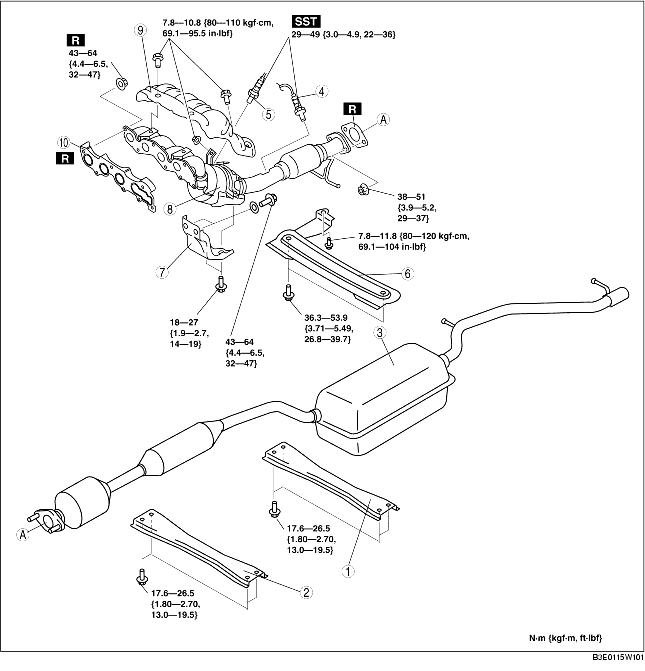

1. Remove the plug hole plate. (See PLUG HOLE PLATE REMOVAL/INSTALLATION [LF].)
2. Remove the battery cover and battery duct. (See BATTERY REMOVAL/INSTALLATION [LF].)
3. Disconnect the negative battery cable.
4. Remove the under cover.
5. Remove in the order indicated in the table.
6. Install in the reverse order of removal.

.
|
1
|
Rear tunnel member
|
|
2
|
Front tunnel member
|
|
3
|
Main silencer
(See Main Silencer Removal Note.)
|
|
4
|
Rear heated oxygen sensor
|
|
5
|
Front heated oxygen sensor
|
|
6
|
Member
|
|
7
|
Exhaust manifold bracket
|
|
8
|
WU-TWC
|
|
9
|
Exhaust manifold insulator
|
|
10
|
Exhaust manifold gasket
|
1. Loosen the lower shock absorber bolt and rear crossmember component installation bolt, and lower the rear crossmember component approx. 70 mm {2.8 in}. (See REAR CROSSMEMBER REMOVAL/INSTALLATION.)
1. Remove the front wheels and tires.
2. Disconnect the steering shaft from the steering gear and linkage side. (See STEERING GEAR AND LINKAGE REMOVAL/INSTALLATION.)
3. Remove the No.1 engine mount rubber. (See ENGINE REMOVAL/INSTALLATION [LF].)
4. Loosen the exhaust manifold bolts.
5. Remove the installation bolts of the front stabilizer and front crossmember component. (See FRONT CROSSMEMBER REMOVAL/INSTALLATION.)
6. Loosen the front crossmember component installation bolts and lower the front crossmember component approx. 100 mm {3.94 in}. (See FRONT CROSSMEMBER REMOVAL/INSTALLATION.)
7. Support the flexible pipe with a support wrap or splint as shown in the figure.
8. Remove the exhaust manifold by lowering it to the underside of the vehicle.
1. Tighten the exhaust manifold installation nuts in the order shown in the figure.